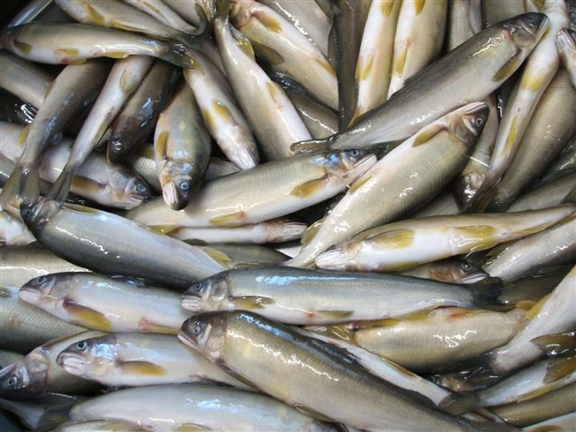
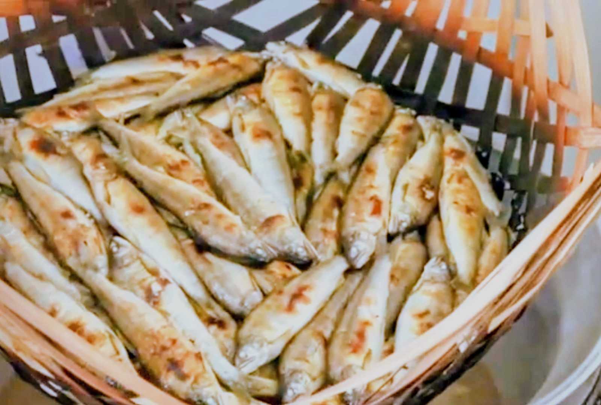

鮎という魚を、あなたは知っているだろうか。

日本には、「香魚（こうぎょ）」と書いて鮎（あゆ）と呼ぶ魚がいます。その名の通り、川魚でありながら、キュウリやスイカを思わせる清らかな香りをまとう——魚とは思えない、みずみずしい芳香をもつ魚です。
鮎は、一年を生きる魚。春に生まれ、夏に清らかな流れをのぼり、季節をひとめぐりして生きる。だから鮎は「年魚（ねんぎょ）」とも呼ばれます。その一生を、澄んだ川だけで過ごす魚です。
そして鮎は、きれいな水にしか棲めません。清流こそが彼らの唯一のすみか。その美しさと気高さから、鮎は古くから「清流の女王」と讃えられてきました。
その女王を、先代から炊き続けてきた一軒がある。

徳島県三好市。真鍋本家は、名物「あゆの姿煮」を先代から受け継ぎ、長きにわたって作り続けてきました。
真鍋本家の本業は、実は醤油と味噌の蔵です。自社の醤油ブランド「真鶴（まなづる）しょうゆ」を醸す、発酵の作り手。その職人が、自らの醤油と高級な阿波番茶を使い、鮎を一尾まるごと、昔ながらの甘露煮でコトコトと長い時間をかけて炊き上げます。
しかもその仕事は、一尾ずつ、すべて手作業。醤油をつくる者だからこそ辿り着ける、味の奥行き。発酵の国・日本の技が一尾に宿る——それが、真鍋本家の姿煮です。
清流が育んだ、一尾のごちそう。
真鍋本家の子持ちあゆの姿煮は、鮎を一尾まるごと甘露煮にした逸品です。骨まで柔らかく炊き上げられているので、頭から尾まで、余すことなく丸ごと味わえます。ひと口ほおばれば、内に抱いた卵のプチプチとした食感と、旨味の効いた深い味わいが、口いっぱいに広がります。
山を抜け、岩を洗い、湧き水を集めて絶えず流れる、清らかな水。この一尾には、日本の地方の清流が育んだ恵みと、真鍋本家が受け継いできた醤油の技が宿っています。
一尾ずつ手をかけて仕込まれる、数に限りのある品。日本の清流の恵みを、そのまま食卓へ——約17cm、一尾ずつ丁寧に個包装してお届けします。